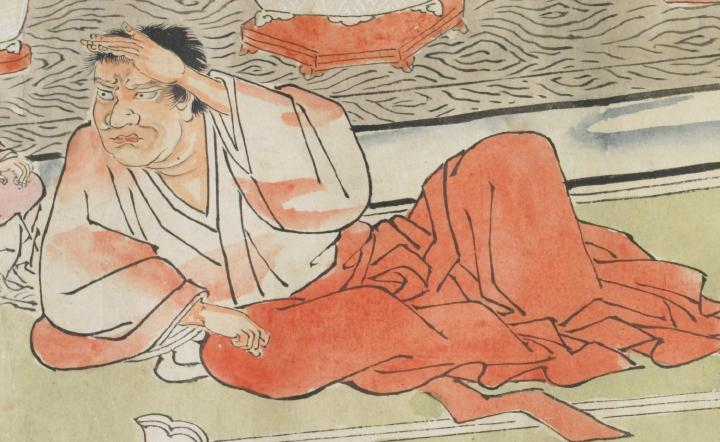

赤い大きな顔の童子。手を額にかざし、遠くを眺めているようである。白い襦袢に、赤い袴をはいている。肘を床につけ、横になっている。
出典：親書誌：U426_nichibunken_0079：酒天童子絵巻；シュテンドウジエマキ／日付：2006／資源識別子：U426_nichibunken_0079_0004_0010
Copyright (c)2010- International Research Center for Japanese Studies, Kyoto, Japan. All rights reserved.